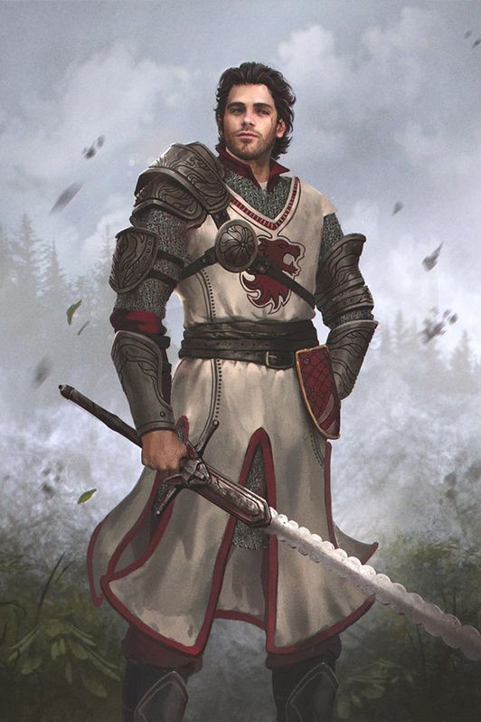
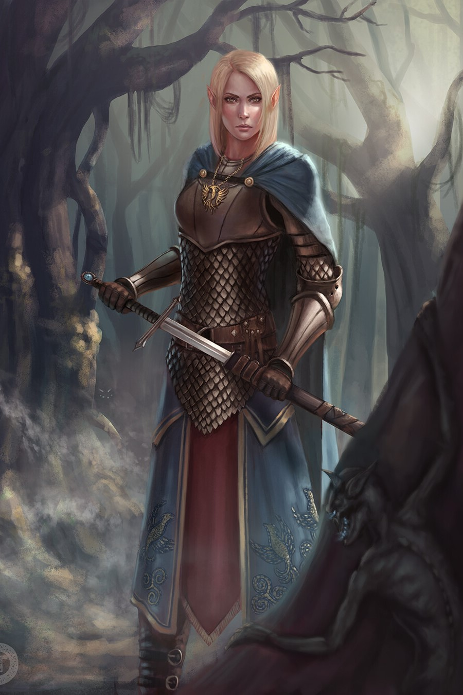
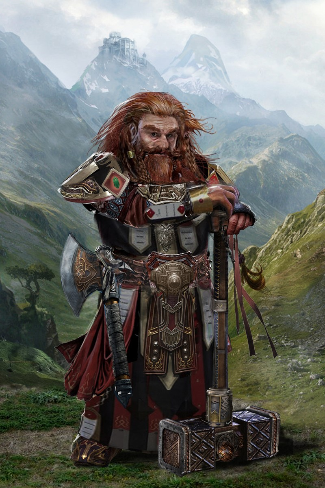
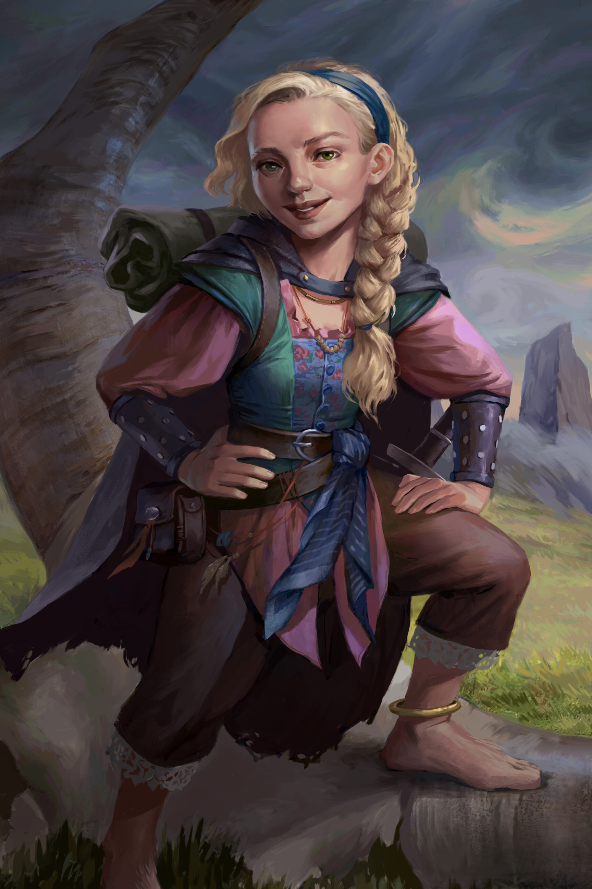
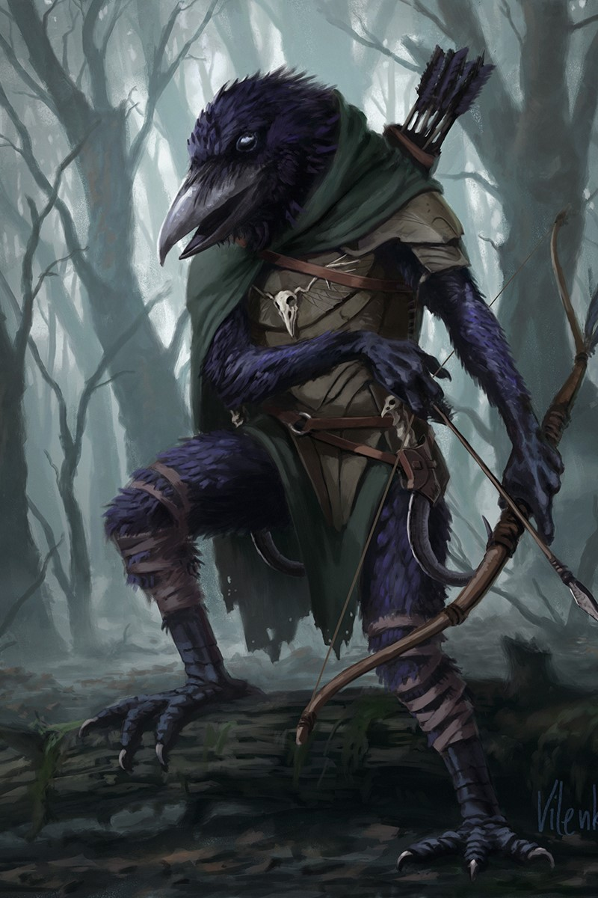

Mensch

Merkmale
Beschreibung
Die Menschen zählen zu den jüngsten Völker der Siebenlande, dennoch konnten sie sich innerhalb kürzester Zeit
zur vorherrschenden Macht des Kontinents aufschwingen. Obwohl ältere Völker sie gelegentlich als simpel und
unkultiviert abtun, sind Menschen äußerst anpassungs- und widerstandsfähig. Es gibt keine Umgebung, die sie
sich nicht zu Untertan machen können. Menschen sind ständig bestrebt, ihren Einfluss auszubreiten und
zählen Diplomatie wie Kriegsführung gleichermaßen zu ihrem Repertoir. Sie werden auch als das Beständige
Volk bezeichnet.
Volkseigenschaften
Menschliche Vielfalt
Du darfst bei der Charaktererstellung den Wert zweier beliebiger Attribute um +1 steigern. Zusätzlich darfst
du eine beliebige Fähigkeit um +2 steigern und erlangst Kompetenz in dieser
Fähigkeit. Außerdem kannst du
ein zusätzliches Talent wählen.
Varianten
Siebenländer
Siebenländer sind die Bewohner derjenigen sieben Nationen, die dem Kontinent seinen gemeinsprachlichen Namen
verschaffen. Dazu gehören die Königreiche Ausperlend, Ennelend, Kaukand, Padrinal, Travenien, die Bennetei,
sowie die Republik Merin.
Niedermarker
Malravier - oder Niedermarker, wie sie in der Gemeinsprache genannt werden - sind die Bewohner des
Großherzogtums Malravien, einer Grenzmark von Padrinal. Aufgrund ihrer gesonderten Lage besitzen sie eine
eigene Kultur und Sprache; Malravier sind stolz auf ihre Nationalidentität und zählen sich selbst nicht zu
den Siebenlanden.
Südländer
Die Migranten des Kontinents jenseits des Südmeeres stammen überwiegend aus dem Zauberreich Mesra, seltener
sogar aus den unerforschten Weiten hinter den Kona-Bergen. Viele sind Händler, die ihre Verbindungen zu den
hochkulturellen Südreichen spielen lassen, um Siebenländern billigen Tand zu überhöhten preisen anzubieten;
andere sind Söldner, die sich leichte Münze in vergleichsweise gefahrlosen Landen verdingen wollen; und
wenige sind einfach nur schaulustige Abenteurer, die sich von der rückständigen Kultur der nördlichen Reiche
selbst ein Bild machen wollen.
Satdit
Die Bewohner der Insel Satdial mögen den Mesrern kulturell viel ähnlicher sein als den Siebenländern,
unterhalten aber gute Beziheungen mit beiden. Zwischen dieser Republik und dem Festland besteht seit jeher
schon reger Handel; ein reisender Satdit ist auf dem Kontinent nicht schwer zu finden.
Fremdländer
Alle jene Zuwanderer, die aus den unbekannten Landen weit jenseits der schützenden Berge der Siebenlande
stammen, werden gemeinhin als Fremdländer bezeichnet.
Elfe Elbe

Merkmale
Beschreibung
Die unsterblichen Elfen zählen zu den ältesten Völkern der Siebenlande und werden aufgrund ihres Alters von vielen als weise und edel angesehen. Ihre Schönheit ist legendär und ihre Kunstfertigkeit gilt als unübertroffen. Mit dieser gefühlten
Überlegenheit geht aber auch ein gewisses Maß an Arroganz einher. Viele Elfen meiden den Kontakt zu sterblichen Völkern, um nicht Generation für Genneration Zeugen der Vergänglichkeit ihrer Freunde werden zu müssen. Man nennt sie auch das Überdauernde Volk.
Volkseigenschaften
Elfische Trance
Statt zu schlafen kannst du in einem tranceartigen Zustand meditieren und in nur 4 Stunden den gleichen Grad
an Erholung erhalten, für den die meisten Völker 8 Stunden Schlaf benötigen. Deine Lange Rast dauert nur halb so lange wie normalerweise.
Elfische Erhabenheit
Du kannst während der Charaktererstellung zwei beliebige Attribute um +1 erhöhen. Zusätzlich kannst du 6
Charakterpunkte für Fähigkeiten, Waffenkunde, oder Magie ausgeben.
Varianten
Hochelfe
Die Hochelfen von Llésindur haben sich für ein zurückgezogenes Leben in den Wäldern ihrer Vorfahren entschieden, dem einzigen Elfenreich der Siebenlande, das tatsächliche Grenzen besitzt. Viele genießen bloß die Ruhe und Abgeschiedenheit ihres Heimatlandes, doch nicht wenige Hochelfen hegen radikalere Ansichten gegenüber dem Verkehr mit sterblichen Völkern, allen voran den Menschen.
Freie Elfe
Besonders junge Elfen zieht es noch in die weite Welt hinaus. Sei es aus freien Stücken oder den Umständen ihrer Geburt geschuldet, Freie Elfen bereisen die Siebenlande, wo sie unter Menschen, Zwergen und Gnomen leben. Viele suchen nach einem Sinn im Leben, andere lockt bloß das Abenteuer, und manche kennen schlicht kein anderes Leben, das erstrebenswert wäre. Häufig verdingen sie sich als Künstler, Poeten und Schausteller; nicht selten kann man Elfen auch als Berater, Heiler und Zauberer zu Hofe finden.
Waldelfe
Die gemeinhin als Waldelfen bezeichneten Bewohner des Dëat Gláddan sind noch einsiedlerischer und fremdenfeindlicher als ihre Verwandten in Llésindur. Anders als bei den Hochelfen entspringt dieser Rückzug von der Gemeinschaft der Siebenlande aber nicht zwangsläufig arroganter Überheblichkeit, sondern findet seinen Ursprung in den historischen Konflikten zwischen den ältesten Völkern und den menschlichen Eroberern, als diese erstmals den Kontinent besiedelten. Heutzutage führen Gláddan-Elfen zusammen mit Faunen, Dryaden und anderen Waldvölkern ein friedfertiges Leben; nur wenige sehen einen Sinn darin, die schützende Heimat zu verlassen und sich unter die Menschen zu begeben.
Fremdländische Elfe
Elfen aus der Fremde stammen von jenseits der schützenden Gebirge der Siebenlande und sind auf der Suche nach Gemeinschaft, Abenteuer, Erkenntnis, oder einer letzten Ruhestätte.
Zwerg

Merkmale
Beschreibung
Zwerge sind toll. Zwerge werden auch als das Trotzige Volk bezeichnet.
Volkseigenschaften
Zwergische Widerstandskraft
Du hast bei Rettungswürfen gegen Vergiftung Vorteil und erhälst eine natürliche +4 Resistenz gegen
Giftattacken.
Zwergische Kampfausbildung
Du bist kompetent im Umgang mit Kriegshämmern und -äxten. Gilt nicht für Freie
Zwerge
Zwergischer Trotz
Deine Basisausdauer steigt oder sinkt um den Wert deines Konstitutionsmodifikators.(?)
Varianten
Stammeszwerg
Freier Zwerg
Apostat
Gnom Halbling

Merkmale
Beschreibung
Gnome sind toll.
Volkseigenschaften
Flink
Du kannst dich durch Felder von Kreaturen hindurchbewegen, die mindestens eine Kategorie größer sind als du.
Gegner müssen einen SG10 + dein GES-Modifikator Reaktionswurf bestehen, um einen Gelegenheitsangriff
gegen dich führen zu können.
Natürlicher Feilscher
Du hast bei Kreaturen, die dir neutral oder wohlgesonnen sind, einen Vorteil bei Diplomatie- und
Täuschungswürfen.
Halblingsglück
Wenn du auf einen Wurf Vorteil hast, kannst du dich stattdessen dazu entscheiden, den umgekehrten Wert des
Ergebnisses zu nehmen; eine 9 wird zu einer 11, eine 15 zu einer 5, eine 1 zu einer 19, etc.
Varianten
Freier Gnom
Gnome, die unter den Menschen leben.
Weswam-Gnom
Gnome, die aus der Weswam-Kommune stammen.
Zwergengnom
Gnome, die unter den Zwergen leben.
Kenku

Merkmale
Beschreibung
Kenku sind toll.
Volkseigenschaften
Leichtfüßig
Du erhälts beim Schleichen einen +2 Bonus auf Heimlichkeit.
Spitze Finger
Du verfügst über außergewöhnliche Feinmotorik; Du erhältst Kompetenz auf alle
Fingerfertigkeits- und
Gaukeleiwürfe.
Varianten
Freier Kenku
Ein Kenku, der unter den Menschen lebt.
Vergelterschar
Ein religiöser Fanatiker, der sich der Vernichtung des eigenen Gottes verschrieben hat.